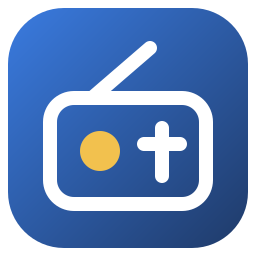
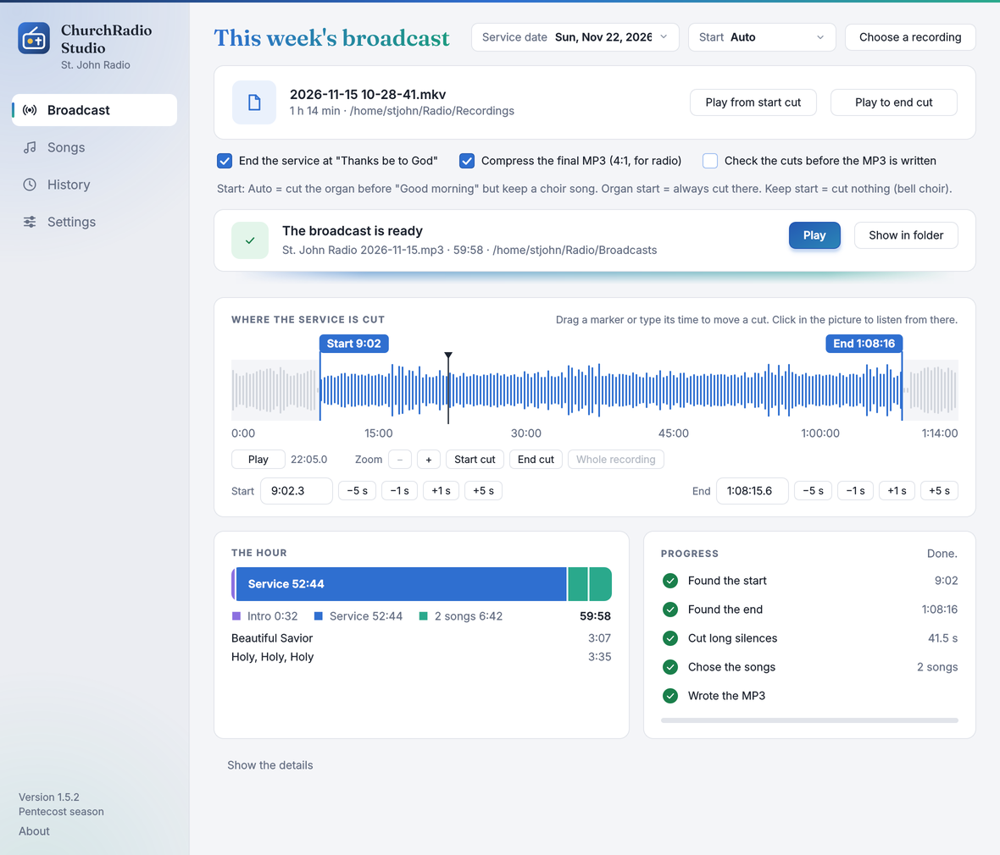
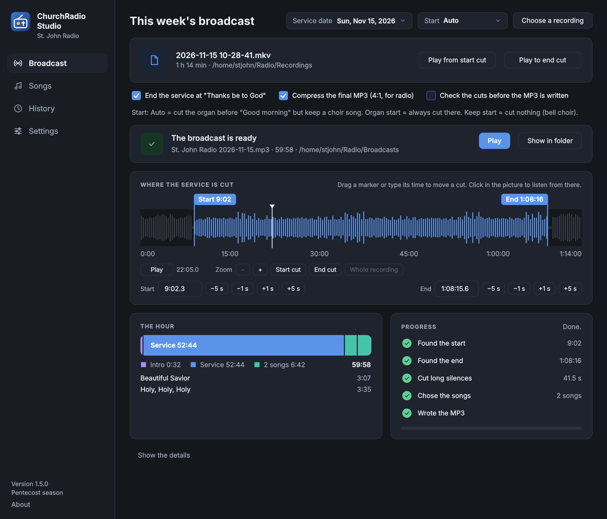

ChurchRadio Studio
Turn your Sunday service recording into a finished radio broadcast, in one drop.
- Cuts the organ prelude and ends at the congregation's answer to the dismissal.
- Fills the rest of the hour with your own songs that fit the church year.
- Nothing about your services leaves your computer.

